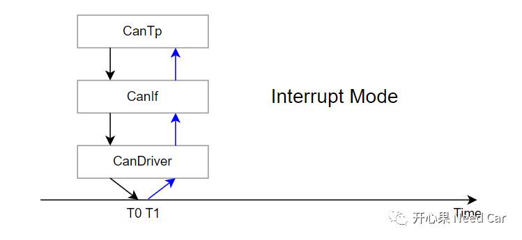
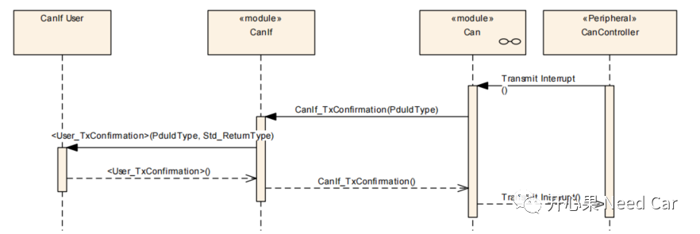
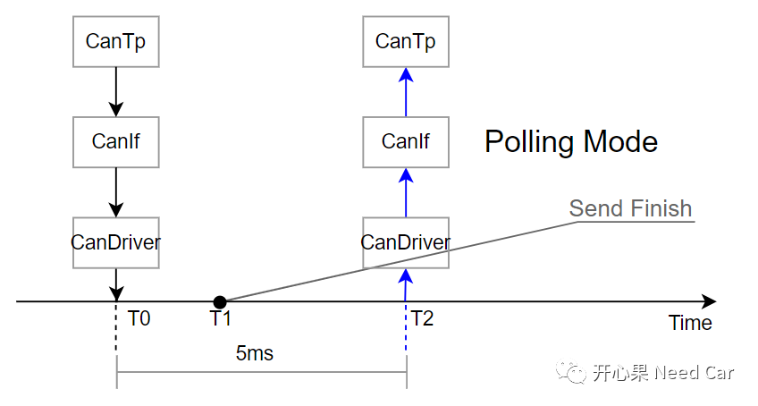
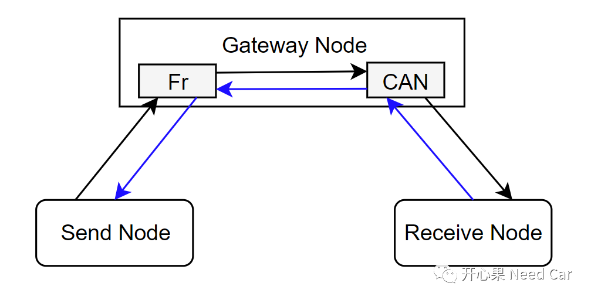
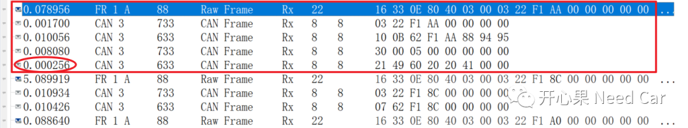
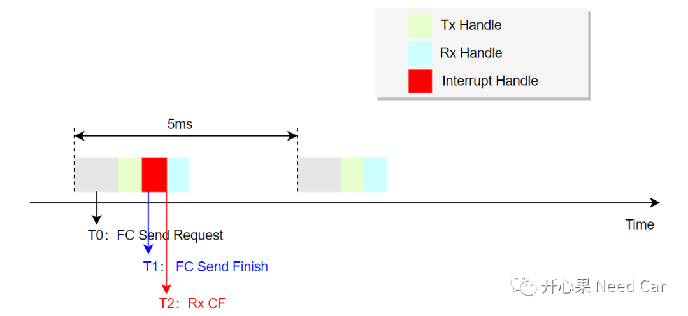
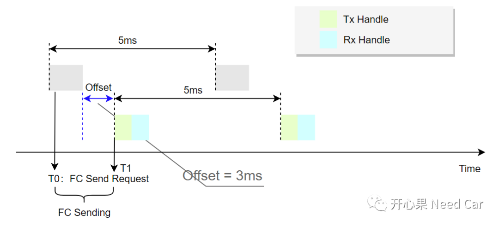
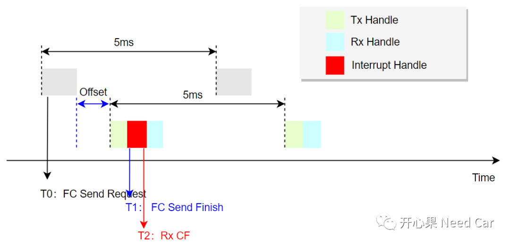

工程开发中，在系统设计之初，需要针对控制器的通信矩阵选择合适的通信处理模式。一般来说，通信量大，选择Polling（轮询）处理模式；通信量小，选择Interrupt（中断）处理模式。这两种模式，没有优劣之分，具体使用哪种，需要结合工程实际。本文，从工程角度，讨论Polling模式可能引发的问题：诊断丢帧。
Interrupt和Polling特点是什么呢？如下：
- Interrupt：响应及时，立即处理，但是过多中断会增加CPU开销，影响系统性能。以CAN报文发送为例，如下图，T0时刻，CanTp请求发送一帧诊断报文，如果此报文在T1时刻成功发送到CAN总线，则会立即将发送完成状态通知到CanTp层。这就是常说的发送中断，具体说是发送完成中断。

对应到Autosar架构中，Interrupt模式下，CAN的发送确认如下所示：

注意：T0~T2期间，任何时刻，报文发送成功，均需要等到T2时刻才能将发送完成状态通知到CanTp层。对应到Autosar架构中，Polling模式下，CAN的发送确认检查如下所示：

如上图，发送节点（Send Node）通过Flexray(Fr)总线将诊断请求发送给网关节点（Gateway Node），网关节点将诊断请求通过CAN总线路由给接收节点（Receive Node），接收节点接收诊断请求并处理；Receive Node响应诊断并发送给Gateway Node，Gateway Node再将数据路由给Send Node。

如上图，Gateway Node接收到完整的数据以后，并未在规定的时间内将数据路由给Send Node，最终会导致As（eg：1s）超时，CanTp状态恢复。具体描述：
Send Node通过Fr总线发送单帧（03 22 F1 AA）；
Gateway Node将单帧通过CAN总线路由给Receive Node；
Receive Node接收到诊断服务后，发出首帧（10 0B 62 F1 AA 88 94 95）；
Gateway Node收到首帧以后，回复Receive Node流控帧（30 00 05）；
Receive Node收到流控帧以后，给Gateway Node发送连续帧（21 49 60 20 20 41 ），数据全部发送完成；
Gateway Node接收到Receive Node的连续帧后，并未给Send Node转发数据。
由于数据处理采用Polling模式，因此，数据处理过程中存在被中断或者高优先级任务抢占的风险，如下所示：

T0时刻，Gateway Node节点的上层（CanTp）请求发送流控帧（03 22 F1 AA），请求成功以后，发送的诊断数据会缓存到驱动层的硬件缓存区（CAN Driver），之后，Controller不断的监听总线，以便于获取CAN总线使用权。CAN仲裁原理，可以参考前文《CAN总线仲裁原理》。且CanTp状态切换到流控帧发送确认状态（CANTP_CH_RX_CONFIRM_FC）；T1时刻，Gateway Node如果刚处理完发送确认（Confirmation）程序，且被中断任务打断。就在CPU去处理中断任务期间，流控帧（03 22 F1 AA）发送完成，但是CanTp状态机需要下一个周期才能切换。而此时，Receive Node收到流控帧以后，很快（256us）发送了连续帧（21 49 60 20 20 41 ）；T2时刻，CPU从中断程序返回，继续处理接收程序，发现收到了连续帧，当Gateway Node的驱动层将数据通知CanTp接收时，发现CanTp的状态机并不是预期的接收连续帧（CANTP_CH_RX_SEGMENTED_CF_WAIT）状态，而是CANTP_CH_RX_CONFIRM_FC状态。因此，CanTp丢弃此连续帧，进而造成诊断丢帧。
采用Polling处理模式，不能及时的获取发送完成状态，进行CanTp层状态机的切换。因此，可以在Task中延迟（offset一段时间）发送状态的确认处理，尽可能的完成CanTp状态机切换，以便于接收下一帧。策略如下所示：

T0时刻，发送请求以后，如果请求成功，意味着，此帧报文可以在T0~T1时间去获取总线使用权，如果诊断报文在这个时间窗口内发送成功，就能及时的进行发送状态的确认，并进行CanTp状态机的及时切换，切换到预期的CANTP_CH_RX_CONFIRM_FC状态，之后，即使程序再次被打断，也可以有效的接收下一个诊断报文。
提示：此方案并不是最优解，只是尝试降低问题的发生概率。因为在应用报文一起参与通信的情况下，诊断报文优先级较低，抢占到总线使用权的时机依赖网络状态，如果网络中有大量的应用报文通信，诊断报文给3ms（通信速率500Kbps时，大概发送10帧报文）的时间窗口依然会抢占不到总线，依然会存在上述问题。
如下图：即使增加Offset，如果流控帧不是在预期的Offset时间内发送完成，而是在T1时刻发送完，T2时刻收到第一个连续帧，上述问题依然存在。

拓展思考：Autosar中，为了优化通信栈，限制了CanTp的缓存机制，也就是说，CanTp发送数据时，去目标上层Copy；底层接收到数据时，直接将其Copy到上层。为了保证数据一致性，每一个N-PDU的发送请求，需要等待发送被确认（confirmation）以后，CanTp才会进行状态机的切换。规范解释如下：点击下方关注，一起聊聊Autosar/嵌入式，如果需要，联系作者进群，给你更专业的解答